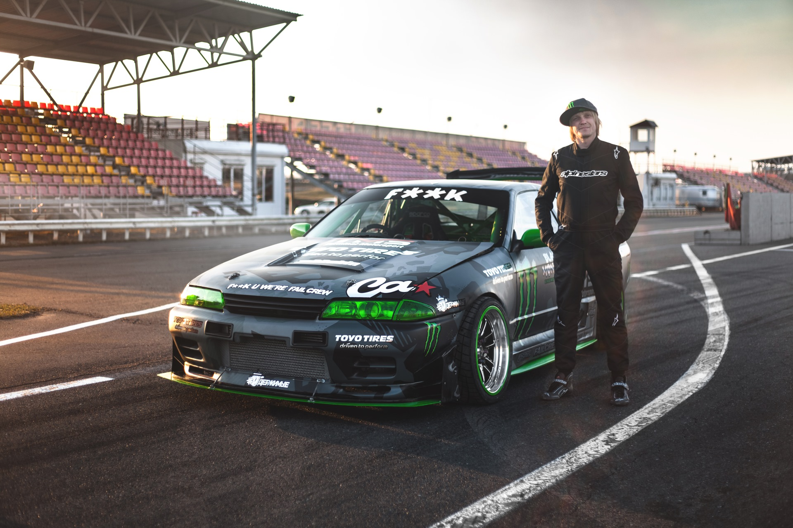
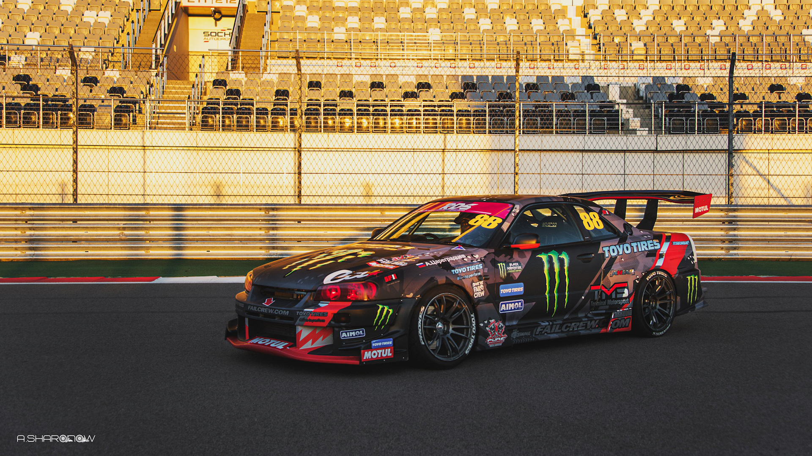

С раннего детства увлекался автомобилями. Первый самостоятельный опыт управления автомобиля получил за рулем Москвича-412 в 16 лет, на котором впервые пробовал ездить в управляемом заносе.
Увлечению автомобилями поспособствовал фильм Форсаж, после которого Аркадий начал участвовать в уличных гонках, а впоследствии и легальных соревнованиях, постепенно совершенствуя умение управлять автомобилем. Тренировался зимой на замерзшем озере на Subaru Forester на «супершипе». Начал участвовать в организации и судействе соревнований, в том числе благодаря развитию местного тематического форума GT-Клуб Красноярск, где использовал псевдоним «Stylzz». Работал в компании по импорту японских автомобилей, благодаря чему имел возможность стать обладателем японского спортивного автомобиля, чем и воспользовался приобретя Mazda RX-7 третьего поколения (FD), на которой выиграл первый сезон серии Time Attack Series на открывшейся в Красноярске кольцевой гоночной трассе Красное Кольцо. В 2008 году совместно с Георгием Чивчяном организует соревнования по дрифту на бетонной площадке с названием Drift Battle. В 2009 году организует первые дрифт заезды на Красном Кольце. Показав организаторские способности, в 2010 году становится директором Красного Кольца. В рамках работы на Красном кольце знакомится с Анатолием Зарубиным, вместе с которым Аркадий снимает видео о подготовке своего Nissan Skyline BNR32, получившего название «BADASS», к участию в дрифт соревнованиях в сезоне 2012 года, где бросает вызов Георгию Чивчяну, ставшему в 2011 году чемпионом Drift Battle. Георгий и Анатолий записывают ответное видео, в результате чего начинается ставшее знаменитым противостояние Аркадия и Георгия. Выступает под спонсорством шинного производителя Federal Tyres. По результатам сезона Аркадий становится вице-чемпионом Drift Battle, уступив победу в чемпионате Георгию Чивчяну.
В начале 2013 года участвует в соревнованиях на снегоходе. Становится чемпионом Drift Battle 2013 года, победив при этом на первом этапе чемпионата на позаимствованном автомобиле Nissan Cefiro A31 с не подвергнутым доработкам двигателем 1JZ-GTE по причине технической неготовности основного автомобиля Nissan Skyline R32. Выигрывает 6й этап РДС-Запад. В ноябре 2013 года вместе с Георгием Чивчяном отправляется в Японию на 6 этап старейшего дрифт чемпионата D1GP в качестве споттера. В 2014 году вновь становится чемпионом Сибири, но уже в чемпионате под брендом РДС-Сибирь, пришедшему на смену Drift Battle. Занимает второе место в одноэтапном чемпионате Супер Дрифт битва, уступив Георгию Чивчяну и пройдя в стадии топ-8 известного японского дрифтера Хибино Тэцуя. Становится победителем 5 этапа РДС-Восток, победив в финале Георгия. Принимает участие в D1 Primring GP, где проигрывает заезд с многократным чемпионом D1GP Ёши Иммамурой. В сезоне 2015 года занимает 4 строчку в чемпионате RDS-Сибирь, пропустив 1й и 5й этапы чемпионата. Также участвует на арендном автомобиле Nissan Silvia S15 в D1GP в 4, 5 и 6 этапах и в D1 Primring GP. В 2016 году становится атлетом команды Fail Crew и получает спонсорство шинного бренда Toyo Tires и завоевывает чемпионство в РДС-Сибирь, а также становится вторым на 4 и 5 этапах РДС-Запад. Участвует в D1 Primring GP, уступив в топ-8 Дмитрию Ермохину. Становится 6 на Гранд Финал RDS 2016. В конце сезона продает ставший знаменитым Nissan Skyline BADASS R32 и подготавливает новый автомобиль- Nissan Skyline R34 с двигателем RB30.
В новом сезоне Аркадий становится постоянным участником РДС-Запад, который благодаря участию чемпионов других региональных серий перерастает в главный чемпионат страны. По итогом сезона Аркадий занимает 3 место. Участвует в D1 Primring GP. Участвует в первом Интерконтинентальном кубке ФИА по дрифту в Японии на острове Одайба, где занимает 2 место по итогу 2 проведенных этапов, уступая японскому многократному чемпиону D1GP Масато Кавабата. Переезжает в Сочи. К сезону 2018 года изменяет конфигурацию автомобиля: вместо RB30 устанавливается VR38DETT от Nissan GT-R мощностью 1192 лошадиные силы, а в качестве подвески теперь используется полный комплект подвески WISEFAB. Участвует в новой международной серии RDS GP, где становится 3. Участвует в D1 Primring GP 2018, а затем и в Интерконтинентальном кубке ФИА по дрифту, где проигрывает Георгию Чивчяну в топ-8. В 2019 году участвует в фестивале Байкальская миля, где вместе Сергеем Кабаргиным устанавливает рекорд скорости по парному дрифту на льду. В сезоне RDS GP 2019 Аркадий занимает 4 место. Организует и судит в Сочи зимний чемпионат по летнему дрифту Sochi Drift Challenge. К сезону 2020 года готовит новый автомобиль: Nissan 370Z с двигателем VR38DETT и подвеской WISEFAB. С 2020 года перестает быть атлетом Toyo Tires и переходит под спонсорство Sailun Tires. В сезоне RDS GP 2020 года занимает 5 место, выиграв 4 квалификации из 6 возможных. В межсезонье проводит второй сезон Sochi Drift Challenge, который набирает популярность как у зрителей, так и у пилотов. В 2021 году участвует в проекте Дорога в дрифт. Участвует в Интерконтинентальном кубке ФИА по дрифту в Латвии на трассе Бикерниеки на автомобиле Сергея Кабаргина Flanker F с двигателем VR38 В сезоне RDS GP 2021 претендует на звание чемпиона.